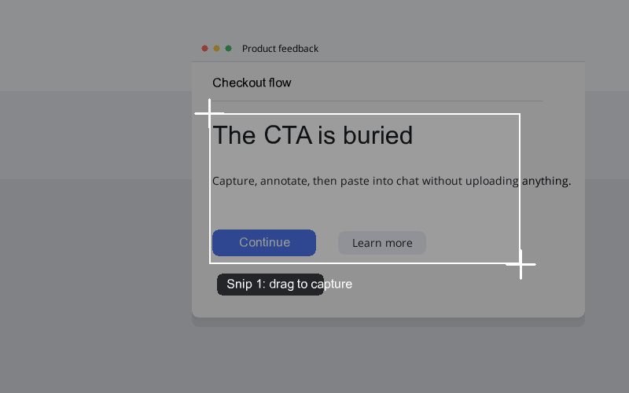

The fastest way to get annotated UI context into your AI agent — or any chat, issue, or doc. Screenshot, annotate, paste. Nothing leaves your Mac.
Download for Mac — Free View on GitHubApple Silicon · ad-hoc signed (right-click → Open on first launch) · MIT licensed

Pick the global hotkey on first run. One press to snip, double press for a scrolling capture.
Snip, annotate, close the editor — it is already on your clipboard, ready to paste into Claude, Cursor, ChatGPT, or anywhere else.
Scroll the page yourself and add each view. Smart stitching removes repeated headers and footers.
Arrows, numbered step markers, redaction, highlighter, text — with an object-aware eraser.
Every snip is a plain PNG in the folder you choose at setup. No accounts, no hidden sidecar files.
No cloud, no analytics, no CDN. The app blocks snip uploads and background network calls.
No snip uploads, no accounts, no analytics. Snip Pilot is local-first by construction: every snip lives only in the folder you pick, and the app makes no background network calls. It is open source, so you can read exactly what it does.